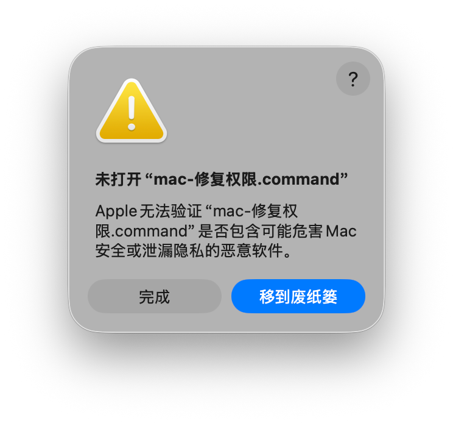
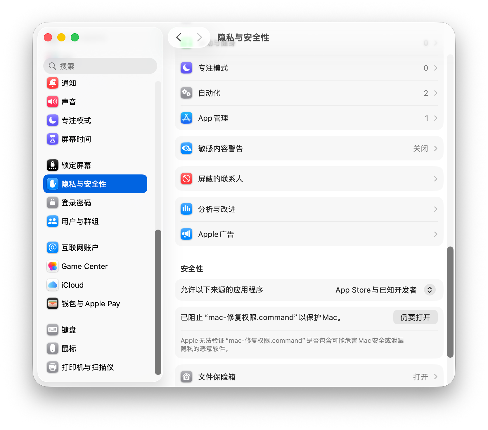
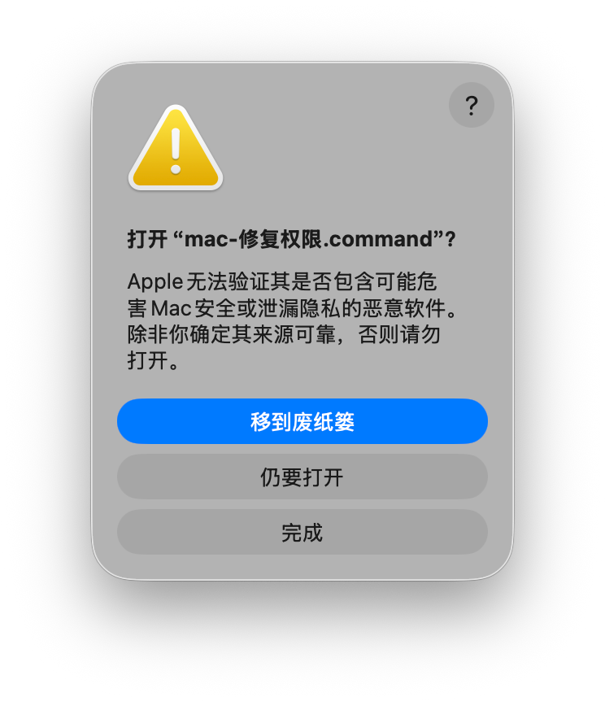
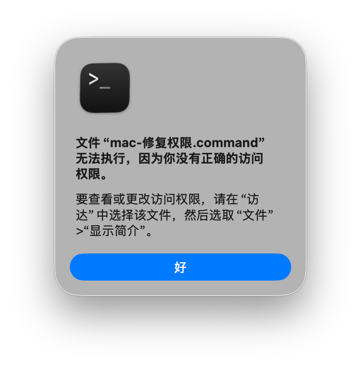

先看结论：一共 4 步
- 双击
mac-启动服务.command，弹窗提示「无法验证开发者」时，点 完成。 - 打开 系统设置 → 隐私与安全性，在「安全性」里点 仍要打开。
- 回到文件夹再次双击，弹窗问「打开 …?」时点 仍要打开。
- 如果提示 没有正确的访问权限：打开终端，进入解压目录，执行
chmod +x mac-启动服务.command。
先解压，确认文件夹是完整的
不要只拖出 main.py
把收到的压缩包解压成文件夹，文件夹里应当能看到这些内容：
mac-启动服务.command— 双击启动用mac-一键修复.command— 遇到任何奇怪问题时先双击它，自动体检并修复mac-修复权限.command— 权限被系统拦住时用python-mac/— 内置的 Python 运行环境与全部依赖（不要删除、不要改名）main.py、static/、data/、API/等程序文件
启动脚本的图标是「创」图案。若显示为终端图标，说明自定义图标在传输中丢失（不影响使用）：双击 mac-修复权限.command 即可从 创.icns 恢复。
第一次双击，出现「无法验证开发者」
这是系统拦截，不是文件损坏
双击 mac-启动服务.command，会看到下面的提示：

到「隐私与安全性」里点「仍要打开」
系统设置 → 隐私与安全性 → 安全性
- 打开 系统设置（屏幕左上角 → 系统设置）。
- 在左侧找到 隐私与安全性，向下滚动到 安全性 区域。
- 看到「已阻止 “mac-启动服务.command” 以保护 Mac」时，点右侧的 仍要打开。
- 按提示输入开机密码，或用触控 ID 确认。

再次双击，在弹窗里确认「仍要打开」
这一步会再问一次，属于正常流程
回到文件夹，再次双击 mac-启动服务.command，会弹出确认窗口：

提示：弹窗里的文件名可能是 mac-启动服务.command 或 mac-修复权限.command，两者处理方式完全一样。
如果提示「没有正确的访问权限」：用终端补执行权限
从网盘 / U 盘 / 压缩包传来时，可执行权限往往会丢失
双击后如果出现下面这个窗口，说明文件缺少「可执行」权限位，需要手动补一次：

① 打开「终端」
- 按 ⌘ + 空格 打开聚焦搜索，输入 终端（或 Terminal），回车；
- 或：启动台 → 其他 → 终端。
② 进入解压后的文件夹
在终端里先输入 cd 和一个空格，然后把文件夹从「访达」直接拖进终端窗口，路径会自动补全（带空格的路径也会自动加引号），再按回车：
cd /你的路径/画布文件夹
不想拖动的话，也可以在访达里右键文件夹 → 按住 ⌥ Option 键 → 「拷贝…为路径名」，再粘贴到终端。
③ 执行加权限命令
确认终端提示符里显示的是该文件夹后，输入下面这行并回车（不会输出任何内容，没有报错就是成功）：
chmod +x mac-启动服务.command
chmod: No such file or directory，说明当前目录不对——请回到第 ② 步重新进入文件夹，可以用 ls 命令确认能看到 mac-启动服务.command 再执行。顺带把内置运行环境和其它脚本也补上权限（推荐）
一次性把三个脚本和内置 Python 都设为可执行，避免后面再遇到同类提示：
chmod +x mac-启动服务.command mac-修复权限.command python-mac/bin/*
执行完 chmod 后，重新双击 mac-启动服务.command 即可。
✓启动成功的标志
终端窗口里会出现类似下面的信息，说明服务已经在运行：
使用内置 Python 运行环境（无需安装依赖库）
本机访问： http://127.0.0.1:3000/
局域网访问： http://192.168.x.x:3000/
INFO: Uvicorn running on http://0.0.0.0:3000
服务就绪后会自动在浏览器打开 http://127.0.0.1:3000/，通常几秒内完成；如果浏览器没弹出来，手动点这个链接打开即可。
- 本机使用：
http://127.0.0.1:3000/（启动后自动打开） - 局域网其它设备：用启动时显示的那个
192.168.x.x地址 - 停止服务：在终端窗口按 ⌃ C，或直接关闭终端窗口
mac-启动服务.command 即可，不会再弹上面的安全提示。启动窗口需要保持开着，关掉窗口服务就会停止。常见问题
遇到奇怪问题？先双击「mac-一键修复.command」
它会逐项体检并自动修复：芯片架构、文件夹是否可写、文件是否完整、执行权限、Gatekeeper 隔离属性、内置 Python 与依赖、脚本图标、3000 端口占用，最后给出「✓ 正常 / ⚠ 提醒 / ✗ 失败」报告。
脚本只改权限、扩展属性和图标，不联网、不碰画布数据；修完再双击启动脚本即可。
./mac-一键修复.command
为什么会被拦？这些脚本安全吗？
macOS 会给从浏览器、网盘、隔空投送下载的文件打上「隔离」标记（quarantine），脚本类文件被拦截后会提示「无法验证开发者」。这只是来源检查，不代表文件有病毒。chmod +x 做的事也只是给文件补上「可执行」权限位，不会修改内容。
双击后终端窗口一闪就消失了
说明启动过程中出错了。请在终端里手动运行，才能看到具体报错：
./mac-启动服务.command
若提示 Permission denied，先执行 chmod +x mac-启动服务.command。
提示「当前架构为 x86_64」
本文件夹内置的是 Apple 芯片（arm64）版本，只支持 M1 / M2 / M3 / M4 等 Mac。Intel 芯片的 Mac 无法直接用这个包，请换用对应的 Intel 版本。
提示「依赖自检未通过」
说明 python-mac/ 不完整（拷贝中断、被清理软件删除、解压时丢文件）。请重新完整拷贝整个文件夹。本包已内置全部依赖，不需要另外执行 pip install。
提示端口 3000 被占用
不用处理。启动脚本会自动结束占用 3000 端口的旧进程，再启动服务。
可以只用系统自带的 Python 启动吗？
不建议。内置的 python-mac/ 已经带齐所有依赖，用它启动最省事：
./python-mac/bin/python3 main.py
用系统 Python 则可能缺少 fastapi、uvicorn 等库，需要自己装依赖。
启动后没有自动打开浏览器
脚本会等 3000 端口就绪后自动用默认浏览器打开页面。若没弹出（例如默认浏览器被改过、系统拦截了打开动作），手动访问 http://127.0.0.1:3000/ 即可。
如果本来就不想自动打开，可以在终端里这样启动：
NO_BROWSER=1 ./mac-启动服务.command
关于内置运行环境
文件夹里的 python-mac/ 是一个完整的、可随文件夹搬移的 Python 3.12 运行环境（Apple 芯片版），第三方依赖已全部装好：
- Web 服务：fastapi、starlette、uvicorn、websockets
- 数据处理：pydantic、httpx、requests、anyio
- 图片处理：pillow（PIL）
- 表单上传 / 配置：python-multipart、python-dotenv、pyyaml
所以换一台 Apple 芯片 Mac 时，把整个文件夹拷过去，双击启动就行，既不用装 Python，也不用联网下载依赖。
python-mac/ 约 114 MB，请勿删除、改名或单独移动；也不要把里面的内容拆开拷贝。